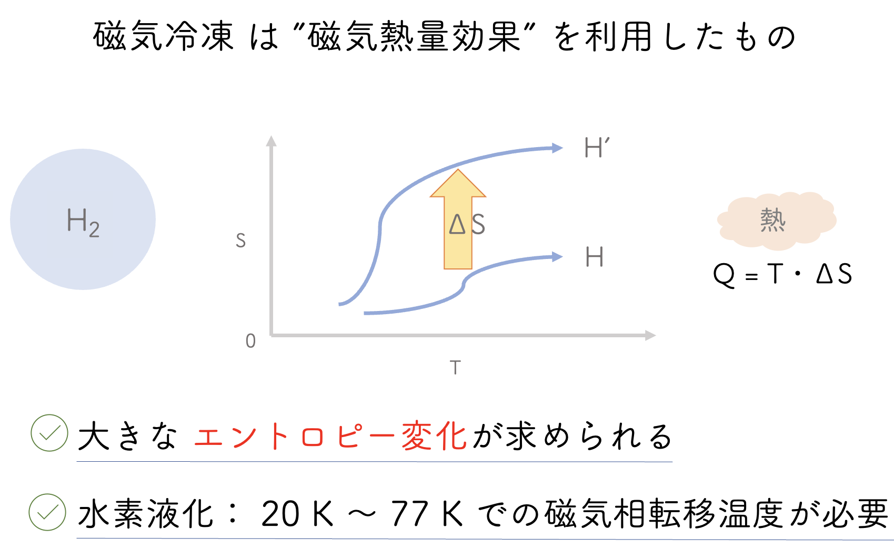

研究内容
題目：逆ペロブスカイト型化合物Gd3AlCの磁気的性質
私達は磁気冷凍技術を用いて，水素を液化することを目的とした磁性材料の開発を行っております．
背景として，クリーンエネルギーの候補であるグリーン水素について，運用するにあたり，化石燃料よりもコストが高いです．
水素は液化することで体積が1/800となり，運用コストを抑えられます．
従来方式よりもサイクル効率が良く，コストが抑えられると期待される磁気冷凍技術が注目されています．
磁気冷凍材料に求められる性能は大きなエントロピー変化です．

エントロピー変化は磁気相転移温度近傍で，最大値を取るので，
水素液化温度から窒素液化温度の20 K ~ 77 K に磁気相転移温度を保つことが磁気冷凍には望まれます．
そこで，希土類の4f電子の大きなスピン自由度を持つGd元素を用いた
"Gd3AlC"について，化学量論比を調整し，不純物を少なくしていくことを目的として，
作製，磁気測定，比熱測定による物性の測定を行います．